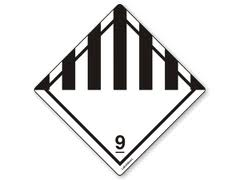
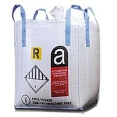
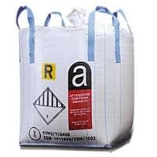
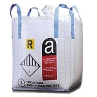

 

>Conseiller sécurité transport des entreprise de désiamantage.
Sous-traiter nous le conseil en sécurité pour le transport des marchandises dangereuses.
La mission :
- Le conseiller à la sécurité a pour mission de promouvoir dans l'établissement toute action de nature à faciliter l'exécution des transports de marchandises dangereuses et à aider à la prévention des risques pour les personnes, les biens ou l'environnement.
La mission en détail :
- l'identification des marchandises dangereuses ;
- la prise en compte dans l'achat des moyens de transport de tout besoin particulier relatif aux marchandises dangereuses transportées ;
- les procédés permettant de vérifier le matériel utilisé pour le transport des marchandises dangereuses ou pour les opérations de chargement ou de déchargement ;
- le fait que les agents aient reçu une formation appropriée et que cette formation soit inscrite dans leur dossier ;
- la mise en oeuvre des procédures d'urgence appropriées aux accidents ou incidents éventuels pouvant porter atteinte à la sécurité pendant le transport de marchandises dangereuses ou pendant les opérations de chargement ou de déchargement ;
- le recours à des analyses et, si nécessaire, la rédaction de rapports concernant les accidents, les incidents ou les infractions graves constatées au cours du transport de marchandises dangereuses ou pendant les opérations de chargement ou de déchargement ;
- la mise en place de mesures appropriées pour éviter la répétition d'accidents, d'incidents ou d'infractions graves ;
- la prise en compte de prescriptions législatives et des besoins particuliers relatifs au transport de marchandises dangereuses concernant le choix et l'utilisation de soustraitants ou autres intervenants ;
- la vérification que le personnel affecté au transport de marchandises dangereuses ou au chargement ou au déchargement de ces marchandises dispose de procédures d'exécution et de consignes détaillées ;
- la mise en place d'actions de sensibilisation aux risques liés au transport de marchandises dangereuses ou au chargement ou au déchargement de ces marchandises ;
- la mise en place de procédés de vérification afin d'assurer la présence à bord des moyens de transport, des documents et équipements de sécurité devant accompagner les transports et la conformité de ces documents et de ces équipements avec la réglementation ;
- la mise en place de procédés de vérification afin d'assurer le respect des règles relatives aux opérations de chargement et de déchargement